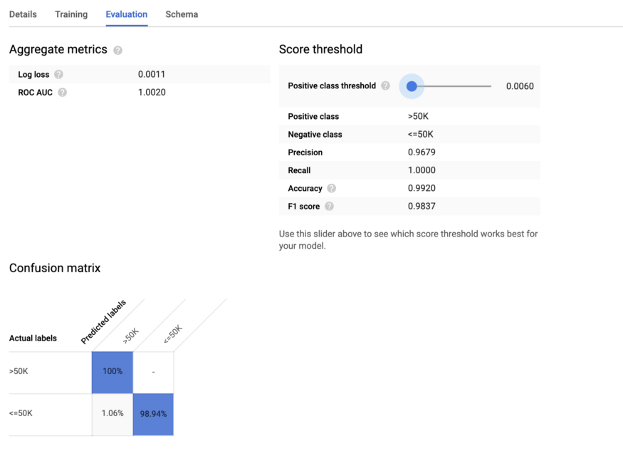

99 Google, BigQuery
TOC
- Misc
- SQL Functions
- BQ Specific Expressions
- Variables
- Remote Functions
- Flex Slots
- Optimization
- Modeling
- BigQueryML
Misc
- Also see
- {bigrquery}
- I think query sizes under a 1TB are free
- if you go above that, then its cheaper to look at flex spots
- BigQuery vs Cloud SQL
- Cloud SQL is a service where relational databases can be managed and maintained in Google Cloud Platform. It allows its users to take advantage of the computing power of the Google Cloud Platform instead of setting up their own infrastructure. Cloud SQL supports specific versions of MySQL, PostgreSQL, and SQL Server.
- BigQuery is a cloud data warehouse solution provided by Google. It also comes with a built-in query engine. Bigquery has tools for data analytics and creating dashboards and generating reports. Cloud SQL does not have strong monitoring and metrics logging like BigQuery.
- BigQuery comes with applications within itself, Cloud SQL doesnt come with any applications.
- Cloud SQL also has more database security options than BigQuery.
- The storage space in Cloud SQL depends on the db engine being used, while that of Bigquery is equivalent to that of Google cloud storage.
- Pricing
- Both have free tiers
- CloudSQL has 2 types: Per Use and Packages
- If usage over 450 hours monthly, then packages is a good option
- Left pic is Per Use pricing; Right pic is Package pricing
- If usage over 450 hours monthly, then packages is a good option
- BigQuery based on Usage
SQL Functions
- UNNEST - BigQuery - takes an ARRAY and returns a table with a row for each element in the ARRAY (docs)
- Google, Analytics >> Analysis >> Example 17
BQ Specific Expressions
- Notation Rules
- Square brackets [ ] indicate optional clauses.
- Parentheses ( ) indicate literal parentheses.
- The vertical bar | indicates a logical OR.
- Curly braces { } enclose a set of options.
- A comma followed by an ellipsis within square brackets [, ] indicates that the preceding item can repeat in a comma-separated list.
- Using EXCEPT within SELECT
- PIVOT for pivot tables
- With more than 1 aggregate
select * from (select No_of_Items, Item, City from sale)
pivot(sum(No_of_Items) Total_num, AVG(No_of_Items) Avg_num
for Item in ('Laptop', 'Mobile'))- UNPIVOT
select * from sale
unpivot(Sales_No for Items in (Laptop, TV, Mobile))- Its a pivot_longer function that puts columns, Laptop, TV, and Mobile, into Items and their values into Sales_No
- Collapse columns into fewer categories
select * from sale
unpivot(
(Category1, Category2)
for Series
in ((Laptop, TV) as 'S1', (Tablet, Mobile) as 'S2')
)Columns have been collapsed into 2 categories, S1 and S2
- 2 columns for each category
Values for each category gets its own column
GROUP BY + ROLLUP
- total sales (where quarter = null) and subtotals (by quarter) by year
QUALIFY
- Allows you to apply it like a WHERE condition on a column created in your SELECT statement because its evaluated after the GROUP BY, HAVING, and WINDOW statements
- i.e. a WHERE function that is executed towards the end of the order of operations instead of at the beginning
- Using a WHERE instead of QUALIFY, the above query looks like this
- Allows you to apply it like a WHERE condition on a column created in your SELECT statement because its evaluated after the GROUP BY, HAVING, and WINDOW statements
Variables (aka parameters)
- Ways to create variables
- Using a CTE
- Basically just using a CTE and calling it a variable or table of variables
- Using BigQuery procedural language
- Using a CTE
- Static values using CTE
- 1 variable, 1 value
-- Input your own value
WITH
variable AS (
SELECT 250 AS product_threshold)
-- Main Query
SELECT
*
FROM
`datastic.variables.base_table`,
variable
WHERE
product_revenue >= product_threshold- CTE
- variable is the name of the CTE that stores the variable
- product_threshold is set to 250
- Query
- The CTE is called in the FROM statement, then the product_threshold can be used in the WHERE expression
- 1 variable, multiple values
-- Multiple values
WITH
variable AS (
SELECT
*
FROM
UNNEST([250,45,75]) AS product_threshold)
-- Main Query
SELECT
*,
'base_table_2' AS table_name
FROM
`datastic.variables.base_table_2`,
variable
WHERE
product_revenue IN (product_threshold);- CTE
- variable is the name of the CTE that stores the variable
- Uses SELECT, FROM syntax
- list of values is unnested into the variable, product_threshold
- See SQL Functions for UNNEST def
- UNNEST essentially coerces the list into a 1 column vector
- Query
- The CTE is called in the FROM statement, then the product_threshold can be used in the WHERE expression
- Not sure why parentheses are around the variable in this case
- Table is filtered by values in the variable
- The CTE is called in the FROM statement, then the product_threshold can be used in the WHERE expression
- Multiple variables with multiple values
-- Multiple variables as a table
WITH
variable AS (
SELECT
product_threshold
FROM
UNNEST([
STRUCT(250 AS price,'Satin Black Ballpoint Pen' AS name),
STRUCT(45 AS price,'Ballpoint Led Light Pen' AS name),
STRUCT(75 AS price,'Ballpoint Led Light Pen' AS name)]
) AS product_threshold)
-- Main Query
SELECT
*
FROM
`datastic.variables.base_table`,
variable
WHERE
product_revenue = product_threshold.price
AND product_name = product_threshold.name- Also see (Dynamic values using CTE >> Multiple variables, 1 valuej) where table.variable syntax isnt used
- CTE
- variable is the name of the CTE that stores the variable
- Instead of SELECT *, SELECT
is used - not sure if thats necessary or not
- UNNEST + STRUCT coerces the array into 2 column table
- The price and name variables each have multiple values
- Each STRUCT expression is a row in the table
- Query
- The CTE is called in the FROM statement, then the product_threshold can be used in the WHERE expression
- Each variable is accessed by table.variable syntax
- Surprised IN isnt used and that you can do this with = operator
- Dynamic values using CTE
- Value is likely to change when performing these queries with new data
- 1 variable, 1 value
- Example: value is a statistic of a variable in a table
-- Calculate twice the average product revenue
WITH
variable AS (
SELECT
AVG(product_revenue)*3 AS product_average
FROM
`datastic.variables.base_table`)
-- Main Query
SELECT
*
FROM
`datastic.variables.base_table`,
variable
WHERE
product_revenue >= product_averageFor basic structure, see (Static values using CTE >> 1 variable, 1 value)
Value is calculated in the SELECT statement and stored as product_average
1 variable, multiple values
- Example: current product names
WITH
variable AS (
SELECT
product_name AS product_threshold
FROM
`datastic.variables.base_table`
WHERE
product_name LIKE '%Google%')
-- Main Query
SELECT
*
FROM
`datastic.variables.base_table`,
variable
WHERE
product_name IN (product_threshold)- For basic structure, see (Static values using CTE >> 1 variable, multiple values)
- CTE
- Product names with Google are stored in product_threshold
- Multiple variables, 1 value
WITH
variable AS (
SELECT
MIN(order_date) AS first_order,
MAX(order_date) AS last_order
FROM
`datastic.variables.base_table_2`)
-- Main Query
SELECT
a.*
FROM
`datastic.variables.base_table` a,
variable
WHERE
order_date BETWEEN first_order
AND last_order- Basically the same as the 1 variable, 1 value example
- CTE
- variable is the name of the CTE where first_order and last_order are stored
- Query
- Not idea why a.* is used here
- Procedural Language
- Misc
- Declare/Set
- DECLARE statement initializes variables
- SET statement will set the value for the variable
- Example: Basic
- Example: SET within IF/THEN conditional
- Checks if a table had the latest data before running the remaining SQL
- Procedure
- checks the row count of the prod_data table where the daily_date field is equal to 20221118 and sets that value to the rowcnt variable
- using IF-THEN conditional statements
- If rowcnt is equal to 1, meaning if theres data found for 20221118, then the string FOUND LATEST DATA will be shown.
- Else the latest_date is set to the value of the max date in the prod_data table and DATA DELAYED is displayed along with the value of latest_date.
- Result: data wasnt found and the latest_date field shows 20221115.
- Loop/Leave
- Example: Loops until a condition is met before running your SQL statements
- Continues from 2nd Declare/Set example
- Procedure
- A counter variable is added with default = -1
- Subtract days from 20221118 using the date_sub function by the counter variable until the rowcnt variable equals 1.
- Once rowcnt equals 1 the loop ends using the LEAVE statement
- Example: Loops until a condition is met before running your SQL statements
- Table Function
- a user-defined function that returns a table
- Docs
- Can be used anywhere a table input is authorized
- e.g. subqueries, joins, select/from, etc.
- Example: Creating
CREATE OR REPLACE TABLE FUNCTION mydataset.names_by_year(y INT64)
AS
SELECT year, name, SUM(number) AS total
FROM `bigquery-public-data.usa_names.usa_1910_current`
WHERE year = y
GROUP BY year, namey is the variable and its type is INT64
Example: Usage
SELECT * FROM mydataset.names_by_year(1950)
ORDER BY total DESC
LIMIT 5- Example: Delete
DROP TABLE FUNCTION mydataset.names_by_yearRemote Functions
- User defined functions (UDF)
- Notes from
- Docs
- Useful in situations where you need to run code outside of BigQuery, and situations where you want to run code written in other languages
- Dont want go overboard with remote functions because they have performance and cost disadvantages compared to native SQL UDFs
- youll be paying for both BigQuery and Cloud Functions.
- Use Cases
- Invoke a model on BigQuery data and create a new table with enriched data. This also works for pre-built Google models like Google Translate and Vertex Entity Extraction
- Non-ML enrichment use cases include geocoding and entity resolution.
- if your ML model is in TensorFlow, I recommend that you directly load it as a BigQuery ML model. That approach is more efficient than Remote Functions.
- Look up real-time information (e.g. stock prices, currency rates) as part of your SQL workflows.
- Example: a dashboard or trading application simply calls a SQL query that filters a set of securities and then looks up the real-time price information for stocks that meet the selection criteria
- Invoke a model on BigQuery data and create a new table with enriched data. This also works for pre-built Google models like Google Translate and Vertex Entity Extraction
WITH stocks AS (
SELECT
symbol
WHERE
...
)
SELECT symbol, realtime_price(symbol) AS price
FROM stocksWhere realtime_price is a remote function
Replace Scheduled ETL with Dynamic ELT
- ELT as need can result in a significant reduction in storage and compute costs
Implement hybrid cloud workflows.
- Make sure that the service you are invoking can handle the concurrency
Invoking legacy code from SQL
Flex Slots
[Docs](https://cloud.google.com/blog/products/data-analytics/introducing-bigquery-flex-slots)- Flex slots are like spot instances on aws but for running queries
- Docs
- A BigQuery slot is a virtual CPU used by BigQuery to execute SQL queries.
- BigQuery automatically calculates how many slots are required by each query, depending on query size and complexity
- Users on Flat Rate commitments no longer pay for queries by bytes scanned and instead pay for reserved compute resources (slots and time)
- With on-demand pricing, you pay for the cost of the query and bytes scanned
- Using Flex Slots commitments, users can now cancel the reservation anytime after 60 seconds.
- At $20/500 slot-hours, billed per second, Flex Slots can offer significant cost savings for On-Demand customers whose query sizes exceed 1TiB.
- view reservation assignments on the Capacity Management part of the BigQuery console
- An hours worth of queries on a 500 slot reservation for the same price as a single 4TiB on-demand query (currently priced at $5/TiB)
- Experiment
-
- Not sure why there arent lower count on-demand slots. Maybe you have to use 2000 slots for on-demand.
- X-axis is the duration of the query
-
- Youre charged by the minute (I think) with 1 minute being the minimum of Idle time.
Optimization
- Misc
- Also see DB, Engineering >> Cost Optimization and SQL >> Best Practices
- Notes from 14 Ways to Optimize BigQuery SQL Performance
- Set-up Query Monitoring:
- Goals
- spot expensive/heavy queries executed by anyone from the organization. The data warehouse can be shared among the entire organization including people who dont necessarily understand SQL but still try to look for information. An alert is to warn them about the low-quality of the query and Data Engineers can help them with good SQL practices.
- spot expensive/heavy scheduled queries at the early stage. Its going to be risky if a scheduled query is very expensive. Having the alerting in place can prevent a high bill at the end of the month.
- understand the resource utilization and do a better job on capacity planning.
- Guide
- Goals
- Bytes shuffled affects query time; Bytes processed affects query cost
LIMITspeeds up performance, but doesnt reduce costs.- For data exploration, consider using BigQuerys (free) table preview option instead.
- The row restriction of LIMIT clause is applied after SQL databases scan the full range of data. Heres the kicker most distributed database (including BigQuery) charges based on the data scans but not the outputs, which is why LIMIT doesnt help save a dime.
- Table Preview
- allows you to navigate the table page by page, up to 200 rows at a time and its completely free
- Avoid using
SELECT *. Choose only the relevant columns that you need to avoid unnecessary, costly full table scans- With row-based dbs, all columns get read anyway, but with columnar dbs, like BigQuery, you dont have to read every column.
- Use
EXISTSinstead ofCOUNTwhen checking if a value is present- If you dont need the exact count, use EXISTS() because it exits the processing cycle as soon as the first matching row is found
SELECT EXISTS (
SELECT
number
FROM
`bigquery-public-data.crypto_ethereum.blocks`
WHERE
timestamp BETWEEN "2018-12-01" AND "2019-12-31"
AND number = 6857606
)- Use Approximate Aggregate Functions
- When you have a big dataset and you dont need the exact count, use approximate aggregate functions instead
- Unlike the usual brute-force approach, approximate aggregate functions use statistics to produce an approximate result instead of an exact result.
- Expects the error rate to be ~ 1 to 2%.
APPROX_COUNT_DISTINCT()APPROX_QUANTILES()APPROX_TOP_COUNT()APPROX_TOP_SUM()HYPERLOGLOG++
SELECT
APPROX_COUNT_DISTINCT(miner)
FROM
`bigquery-public-data.crypto_ethereum.blocks`
WHERE
timestamp BETWEEN '2019-01-01' AND '2020-01-01'- Replace Self-Join with Windows Function
- Self-join are always inefficient and should only be used when absolutely necessary. In most cases, we can replace it with a window function.
- A self-join is when a table is joined with itself.
- This is a common join operation when we need a table to reference its own data, usually in a parent-child relationship.
- Example
WITH
cte_table AS (
SELECT
DATE(timestamp) AS date,
miner,
COUNT(DISTINCT number) AS block_count
FROM
`bigquery-public-data.crypto_ethereum.blocks`
WHERE
DATE(timestamp) BETWEEN "2022-03-01"
AND "2022-03-31"
GROUP BY
1,2
)
/* self-join */
SELECT
a.miner,
a.date AS today,
a.block_count AS today_count,
b.date AS tmr,
b.block_count AS tmr_count,
b.block_count - a.block_count AS diff
FROM
cte_table a
LEFT JOIN
cte_table b
ON
DATE_ADD(a.date, INTERVAL 1 DAY) = b.date
AND a.miner = b.miner
ORDER BY
a.miner,
a.date
/* optimized */
SELECT
miner,
date AS today,
block_count AS today_count,
LEAD(date, 1) OVER (PARTITION BY miner ORDER BY date) AS tmr,
LEAD(block_count, 1) OVER (PARTITION BY miner ORDER BY date) AS tmr_count,
LEAD(block_count, 1) OVER (PARTITION BY miner ORDER BY date) - block_count AS diff
FROM
cte_table aORDER BYorJOINon INT64 columns if you can.- When your use case supports it, always prioritize comparing INT64 because its cheaper to evaluate INT64 data types than strings.
- If the join keys belong to certain data types that are difficult to compare, then the query becomes slow and expensive.
- i.e. join on an int instead of a string
- Instead of
NOT IN, useNOT EXISTSoperator to write anti-joins because it triggers a more resource-friendly query execution plan- anti-join - a JOIN operator with an exclusion clause
WHERE NOT IN,WHERE NOT EXISTS, etc) that removes rows if it has a match in the second table. - See article for an example
- anti-join - a JOIN operator with an exclusion clause
- In any complex query, filter the data as early in the query as possible
- Apply filtering functions early and often in your query to reduce data shuffling and wasting compute resources on irrelevant data that doesnt contribute to the final query result
- e.g.
SELECT DISTINCT,INNER JOIN,WHERE,GROUP BY
- Expressions in your
WHEREclauses should be ordered with the most selective expression first- Doesnt matter except for edge cases (e.g. the example below didnt result in a faster query) such as:
- If you have a large number of tables in your query (10 or more).
- If you have several EXISTS, IN, NOT EXISTS, or NOT IN statements in your WHERE clause
- If you are using nested CTE (common table expressions) or a large number of CTEs.
- If you have a large number of sub-queries in your FROM clause.
- Not optimized
- Doesnt matter except for edge cases (e.g. the example below didnt result in a faster query) such as:
WHERE
miner LIKE '%a%'
AND miner LIKE '%b%'
AND miner = '0xc3348b43d3881151224b490e4aa39e03d2b1cdea'The LIKE expressions are string searches which are expensive so they should be towards the end
The expression with the = operator is the most selective expression since its for a particular value of miner, so it should be near the beginning
Optimized
WHERE
miner = '0xc3348b43d3881151224b490e4aa39e03d2b1cdea'
AND miner LIKE '%a%'
AND miner LIKE '%b%'- Utilize PARTITIONS and/or CLUSTERS to significantly reduce amount of data thats scanned
- Misc
- Also see
- DB, Engineering >> Cost Optimization >> Partitions and Indexes for CLUSTER
- SQL >> Partitions
- Partitioning Docs
- Clustering Docs
- Notes from
- original optimization article
- How to Use Partitions and Clusters in BigQuery Using SQL
- Use BOTH partitions and clusters on tables that are bigger than 1 GB to segment and order the data.
- For big tables, its beneficial to both partition and cluster.
- Limits
- 4,000 partitions per table
- 4 cluster columns per table
- Info about partititoning and cluster located in Details tab of your table
- Also see
- Clustering divides the table into even smaller chunks than partition
- A Clustered Table sorts the data into blocks based on the column (or columns) that we choose and then keeps track of the data through a clustered index.
- During a query, the clustered index points to the blocks that contain the data, therefore allowing BigQuery to skip through irrelevant ones. The process of skipping irrelevant blocks on scanning is known as block pruning.
- Partitioning
- Misc
- Partition columns should always be picked based on how you expect to use the data, and not depending on which column would evenly split the data based on size.
- Example: partition on county because your analysis or transformations will largely be done by county even though since some counties may be much larger than others and will cause the partitions to be substantially imbalanced.
- Partition columns should always be picked based on how you expect to use the data, and not depending on which column would evenly split the data based on size.
- Types of Partition Keys
- Time-unit column: Tables are partitioned based on a time value such as timestamps or dates.
- Ingestion time: Tables are partitioned based on the timestamp when BigQuery ingests the data.
- Integer range: Tables are partitioned based on a number.
- Example: Partition by categorical
- Misc
- Misc
CREATE TABLE database.zoo_partitioned
PARTITION BY zoo_name AS
(SELECT *
FROM database.zoo)- Example: Partition by date
CREATE OR REPLACE TABLE
`datastic.stackoverflow.questions_partitioned`
PARTITION BY
DATE_TRUNC(creation_date,MONTH) AS (
SELECT
*
FROM
`datastic.stackoverflow.questions`)- creation_date is truncated to a month which reduces the number of partitions needed for this table
- Days would exceed the 4000 partition limit
- Partition Options
- partition_expiration_days: BigQuery deletes the data in a partition when it expires. This means that data in partitions older than the number of days specified here will be deleted.
- require_partition_filter: Users cant query without filtering (WHERE clause) on your partition key.
- Example: Set options
CREATE OR REPLACE TABLE
`datastic.stackoverflow.questions_partitioned`
PARTITION BY
DATE_TRUNC(creation_date,MONTH) OPTIONS(partition_expiration_days=180,
require_partition_filter=TRUE) AS (
SELECT
*
FROM
`datastic.stackoverflow.questions`)
ALTER TABLE
`datastic.stackoverflow.questions_partitioned`
SET
OPTIONS(require_partition_filter=FALSE,partition_expiration_days=10)- Clustering
- Best with values that have high cardinality, which means columns with various possible values such as emails, user ids, names, categories of a product, etc
- Able cluster on multiple columns and you can cluster different data types (STRING, DATE, NUMERIC, etc)
- Example: Cluster by categorical
CREATE TABLE database.zoo_clustered
CLUSTER BY animal_name AS
(SELECT *
FROM database.zoo)- Example: Cluster by tag
CREATE OR REPLACE TABLE
`datastic.stackoverflow.questions_clustered`
CLUSTER BY tags AS (
SELECT
*
FROM
`datastic.stackoverflow.questions`)- Partition and Cluster
- Example
CREATE OR REPLACE TABLE
`datastic.stackoverflow.questions_partitioned_clustered`
PARTITION BY
DATE_TRUNC(creation_date,MONTH)
CLUSTER BY
tags AS (
SELECT
*
FROM
`datastic.stackoverflow.questions`)- Use
ORDER BYonly in the outermost query or within window clauses (analytic functions).- Ordering is a resource intensive operation that should be left until the end since tables tend to be larger at the beginning of the query.
- BigQuerys SQL Optimizer isnt affected by this because its smart enough to recognize and run the order by clauses at the end no matter where theyre written.
- Still a good practice though.
- Push complex operations, such as regular expressions and mathematical functions to the end of the query
- e.g.
REGEXP_SUBSTR()andSUM()
- e.g.
- Use
SEARCH()for nested data- Can search for relevant keywords without having to understand the underlying data schema
- Tokenizes text data, making it exceptionally easy to find data buried in unstructured text and semi-structured JSON data
- Traditionally when dealing with nested structures, we need to understand the table schema in advance, then appropriately flatten any nested data with UNNEST() before running a combination of WHERE and REGEXP clause to search for specific terms. These are all compute-intensive operators.
- Example
- Can search for relevant keywords without having to understand the underlying data schema
-- old way
SELECT
`hash`,
size,
outputs
FROM
`bigquery-public-data.crypto_bitcoin.transactions`
CROSS JOIN
UNNEST(outputs)
CROSS JOIN
UNNEST(addresses) AS outputs_address
WHERE
block_timestamp_month BETWEEN "2009-01-01" AND "2010-12-31"
AND REGEXP_CONTAINS(outputs_address, '1LzBzVqEeuQyjD2mRWHes3dgWrT9titxvq')
-- with search()
SELECT
`hash`,
size,
outputs
FROM
`bigquery-public-data.crypto_bitcoin.transactions`
WHERE
block_timestamp_month BETWEEN "2009-01-01" AND "2010-12-31"
AND SEARCH(outputs, `1LzBzVqEeuQyjD2mRWHes3dgWrT9titxvq`)- Create a search index for the column to enable point-lookup text searches
# To create the search index over existing BQ table
CREATE SEARCH INDEX my_logs_index ON my_table (my_columns);- Caching
BigQuery has a cost-free, fully managed caching feature for our queries
BigQuery automatically caches query results into a temporary table that lasts for up to 24 hours after the query has ran.
- Can toggle the feature through Query Settings on the Editor UI
Can verify whether cached results are used by checking Job Information after running the query. The Bytes processed should display 0 B (results cached).
Not all queries will be cached. Exceptions include: A query is not cached when it uses non-deterministic functions, such as CURRENT_TIMESTAMP(), because it will return a different value depending on when the query is executed.
- When the table referenced by the query received streaming inserts because any changes to the table will invalidate the cached results. If you are querying multiple tables using a wildcard.
Modeling
- Misc
- Train/Validation/Test split
- Create or choose a unique column
- Create
- Use a random number generator function such as
RAND()orUUID() - Create a hash of a single already unique field or a hash of a combination of fields that creates a unique row identifier
FARM_FINGERPRINT()is a common function- Always gives the same results for the same input
- Returns an INT64 value (essentially a number, rather than a combination of numbers and characters) that we can control with other mathematical functions such as
MOD()to produce our split ratio. - Others dont have these qualities, e.g.
MD5()orSHA()
- Use a random number generator function such as
- Create
- Create or choose a unique column
- BigQueryML
- Syntax
CREATE MODEL dataset.model_name
OPTIONS(model_type=linear_reg, input_label_cols=[input_label])
AS SELECT * FROM input_table;Make predictions with ML.PREDICT
Example: Logistic Regression
CREATE MODEL `mydata.adults_log_reg`
OPTIONS(model_type='logistic_reg') AS
SELECT *,
ad.income AS label
FROM
`mydata.adults_data` ad- Output
- Model appears in the sidebar alongside your data table. Click on your model to see an evaluation of the training performance.